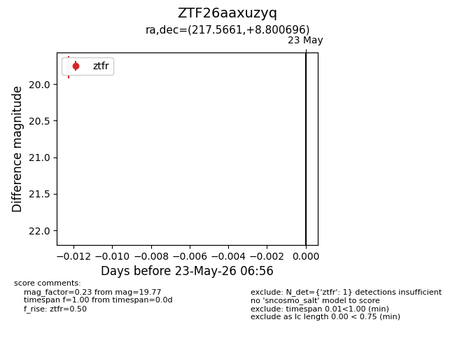
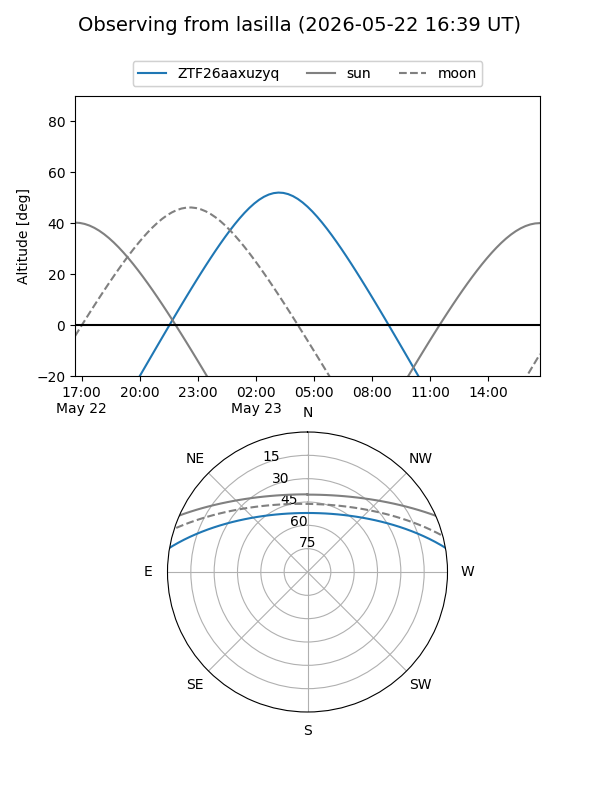
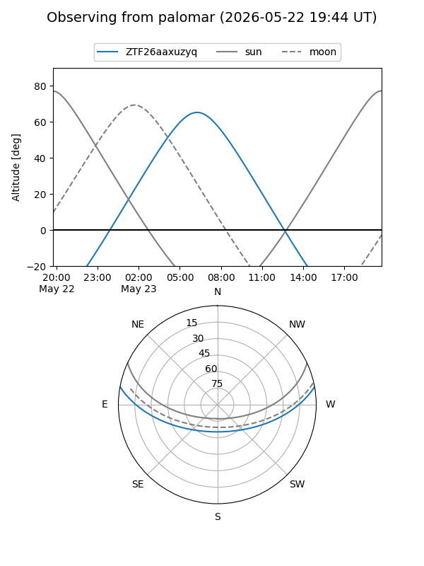

ZTF26aaxuzyq
Target ZTF26aaxuzyq at 2026-05-23 06:57
Aliases and brokers:
lsst-FINK: link
lsst-Lasair: link
lsst-ALeRCE: link
ztf-FINK: link
ztf-Lasair: link
ztf-ALeRCE: link
alt names
ZTF26aaxuzyq (ztf,fink_ztf)
Coordinates:
equatorial (ra, dec) = 217.5661,+8.80070
equatorial (HMS+DMS) = 14:30:15.85,+08:48:02.51
galactic (l, b) = (359.4505,+60.31535)
Flags:
Photometry:
last ztfr=19.77
1 ztfr detections
Lightcurve

Visibility


Additional plots